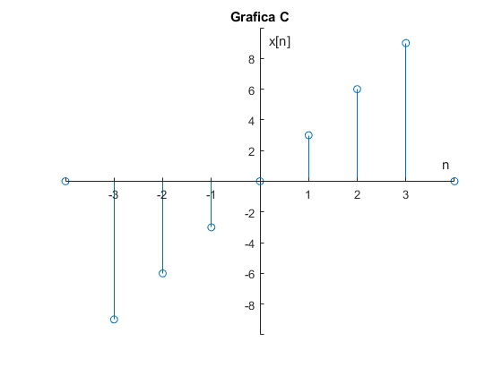
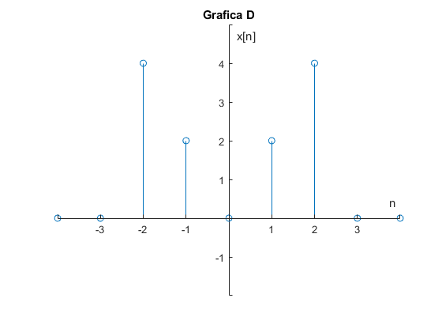
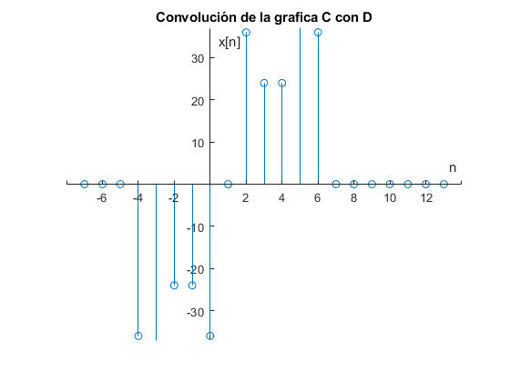

Ejercicio 5
Realice la la convolución de las señales (c) con (d) del problema 3.1.1 utilizando el comando conv de MATLAB, muestre el código utilizado y gráfique el resultado sugerencia: Utilice las propiedades de traslación de la convolución.
Contents
Definimos el primer vector
C=[0 -9 -6 -3 0 3 6 9 0 0 0]; n=-4:6; stem(n,C) axis([-4 4 -10 10]) ax = gca; ax.XAxisLocation = 'origin'; ax.YAxisLocation = 'origin'; ax.Box = 'off'; title('Grafica C') xlabel('n') ylabel('x[n]')
Defnimos el segundo vector
D=[0 0 4 2 0 2 4 0 0 0 0 ]; stem(n,D) axis([-4 4 -2 5]) ax = gca; ax.XAxisLocation = 'origin'; ax.YAxisLocation = 'origin'; ax.Box = 'off'; title('Grafica D') xlabel('n') ylabel('x[n]')
Haciendo la Convolución
X=-7:13; R=conv(C,D)
R =
Columns 1 through 13
0 0 0 -36 -42 -24 -24 -36 0 36 24 24 42
Columns 14 through 21
36 0 0 0 0 0 0 0
Grafica de La convolución
stem(X,R) axis([-8 14 -37 37]) ax = gca; ax.XAxisLocation = 'origin'; ax.YAxisLocation = 'origin'; ax.Box = 'off'; title('Convolución de la grafica C con D') xlabel('n') ylabel('x[n]')